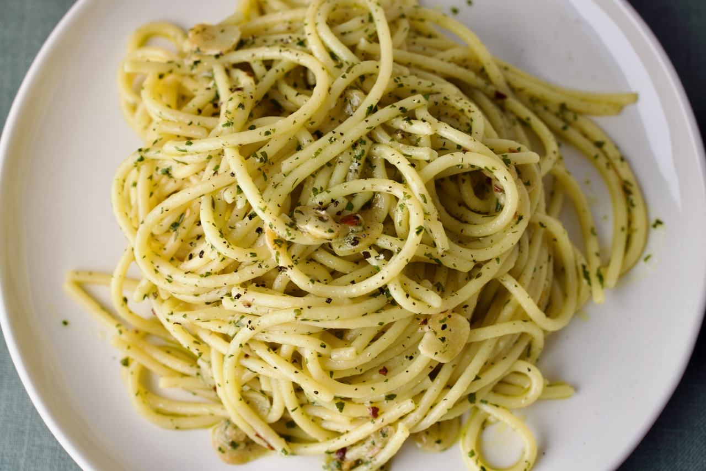

Aglio e Olio
Home
This is a recipe for Aglio e Olio, a simple pasta dish. Aglio e Olio translates to garlic and oil, and those are practically the only ingredients! (plus parsley, plus chilli, but you could get most of the way there with just garlic and oil)

Ingredients:
- 500g spaghetti
- 120ml extra virgin olive oil
- 1 small head of garlic (about 6 or 7 cloves), finely sliced or crushed
- 1 bunch of parsley, chopped
- 2 fresh red chillis or a teaspoon of dried chilli flakes (dried is fine), finely sliced
Instructions:
- Start the pasta boiling. Try to use as little water as you can - we want the resulting starchy pasta water to be as concentrated as possible
- Add the olive oil, garlic and chilli to a frying pan on medium/low heat. You want the garlic and chilli to infuse into the oil, but not to burn
- Once the pasta is cooked, transfer to frying pan, reserving the cooking water
- Add a splash of pasta water and toss vigorously to emulsify, adding more pasta water as needed
- Stir in parsley to finish